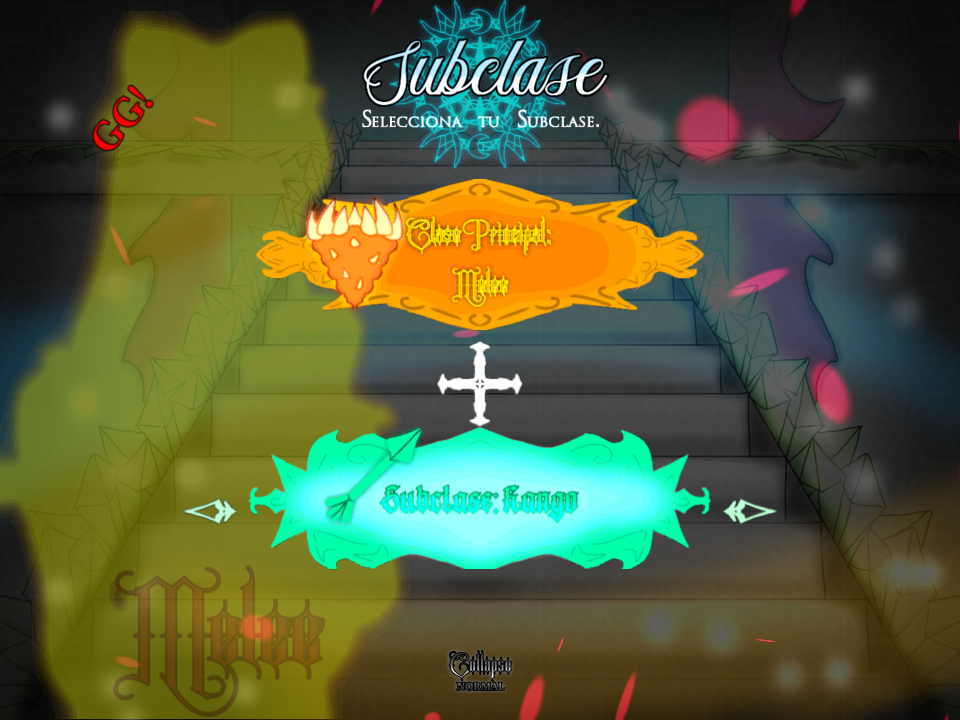
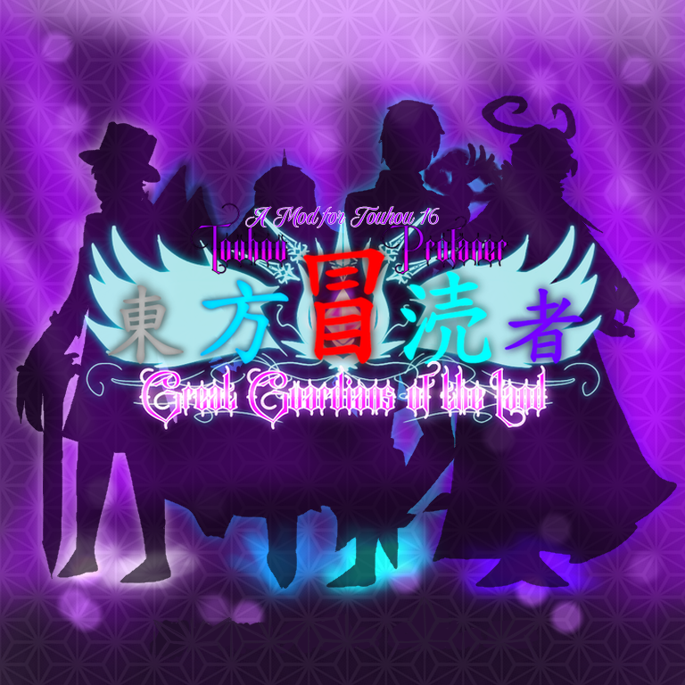

Great Guardians of the Land is a mod for Touhou 16 HSiFS - Hidden Star in Four Seasons, it's development started since September, 2024 and it was finally released on December 24th, 2024 as a mod that replaces all of the game and extends the Guardians AU from Terraria. With this, you can access to an AU-OC crossover story based on Terraria, Calamity and a bit of Fargo's Souls mod.
GGotL has all of the bosses patterns modified, being one of the most challenging mods into this saga, it also includes new features and effects for the later bosses.
The list of playable characters is almost the same from Perfect Cherry Blossom:
Each character can select a total of four subshoots, these subshoots represents a class from Terraria similar to CD's selectable shottypes. Every of them are bassed on a Calamity mod's weapon.
Selectable characters also have an already determined main class, but this doesn't affect the gameplay too much.

All bosses have new and very challenging danmaku patterns, using all your arsenal such as release option and bombs is ideal.
A time passed since the last time Reimu entered to Terraria, Caty Yafumo cordially invited her to meet again. In that meeting, Reimu felt the desire of meeting all of the Guardians, that gave Caty the idea of organizing a friendly duel.
But first of all, Reimu and the rest of participants from Gensokyo must learn about the classes rules.
The notice spreaded from all of Terraria, and old friends were interested on participate. It was a real event.
This mod replaces all of the tracks, including the title theme and game over theme.
Authors:
This is the mod with the most various music artist in the mods saga, but thanks to this, it has the atmosphere I wanted to get.

Kanji: 東方冒涜者
Type: Mod, Full
Release: December 24th, 2024
Developers: Dark Caty
Dimension: Terraria
Music: FalKKonE, Ssbbmaster, DM DOKURO, Yuri 0, RichaadEB, Phyrnna, Ensiferum, Re-Logic, Jamie Christopherson, Pinpin Neon
Credits: ZUN, Calamity team, Re-Logic, Fargowitas
Languaje: Span-English